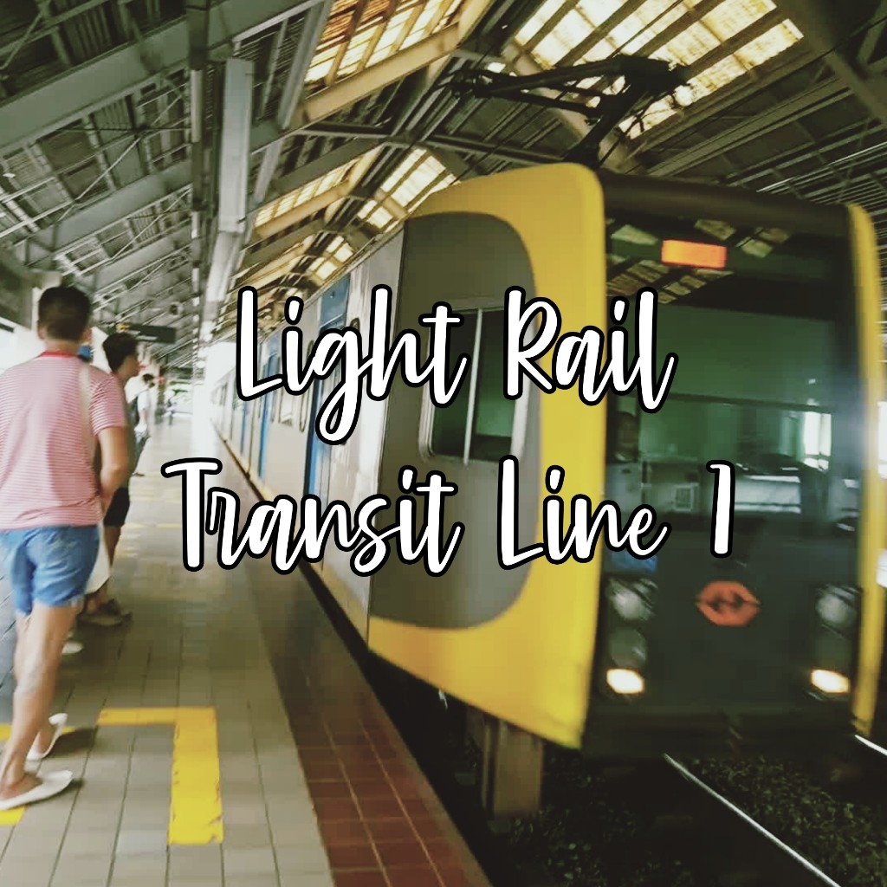
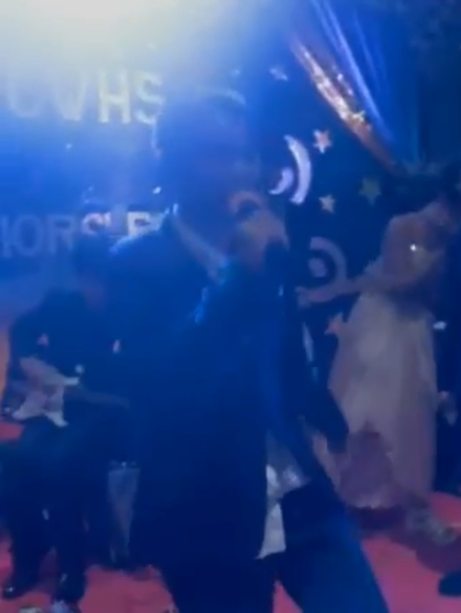

Light Rail Transit Line 1
2024 Single by Justin
Light Rail Transit Line 1is an independent single written, composed, and recorded by Justin. Released on February 21, 2024, it serves as the flagship track of his debut studio album, PH Rail Songs, accompanied by an official music video. The song quickly went viral on Facebook, with users widely adopting the accelerating closing verse, particularly the hooks
Baclaran, EDSA, Libertadand
LRT mas mabilisas a popular audio soundbite matching various throwback and transit video trends.
Light Rail Transit Line 1 |
|
|---|---|
 |
|
| Single by Justin from the album PH Rail Songs | |
| Recorded | February 21, 2024 |
| Released | February 21, 2024 |
| Length | 3:03 |
| Label | Independent (Justin • LRT-1) |
| Songwriter | Justin |
| Producer | Justin |
| Music | |
| Audio | Light Rail Transit Line 1Official Audio |
| Music Video | Light Rail Transit Line 1Official Music Video  |
Justin initially slated
Light Rail Transit Line 1for a December 2022 release as the lead track of his album. However, he pushed production back to April 2023 to gather more firsthand commuter experiences and insights during his daily train rides.
To drum up anticipation and decide on the best strategy for the official performance, Justin conducted a classroom poll in February 2024, asking peers whether the music video should be staged inside an actual LRT-1 train car or on the school grounds. Staging on campus won the vote (27 votes to 23). Justin ultimately chose a bustling school corridor right outside his classroom as the primary performance venue for the launch.
Lyrically, the song actively promotes and celebrates local rail transit with inviting lines like
Gusto mo bang sumakay sa Light Rail Transit Line 1?. Culturally, the arrangement blends dynamic transitions between energetic percussion and bright piano keys. The track has received critical praise from classmates, faculty, and rail enthusiasts for its creative delivery.
The track stands as a fearless leap into a unique blend of musical genres, daringly exploring folk hooks, rhythmic jazz structures, and theatrical energy all within a single arrangement. While bridging these styles presents a technical challenge, the production masters the balance, seamlessly mirroring the sonic atmosphere with active transit lyricism. By encouraging audiences to opt for the speed and cool comfort of the LRT-1, the song connects foundational human experiences with local commuter culture, allowing it to resonate deeply with listeners across generations.
According to production logs shared on Facebook, Justin built the backing track using a customized rhythmic beat timed to match a panning video of the campus corridor. He aimed to execute a flawless, seamless transition leading into a theatrical grand finale, where the music builds into an accelerating, fast-paced vocal verse as everything hits all at once.
The official music video debuted alongside the single on February 21, 2024. The video showcases Justin performing the track directly inside a lively high school corridor as fellow students move through the halls during recess.
Following its sudden social media traction, the music video experienced an exponential spike in traffic. It remains his most successful digital release, accumulating over 100,000 views as of May 2026
Credits adapted from the official production log:
- Justin - Lead Vocals, Instrumentation, Songwriting, Audio Mixing, Video Editing, Producer
- Kent Adrian Capila - Videographer
Within a week of its launch,
Light Rail Transit Line 1secured widespread engagement, driving a notable spike in organic viewership across digital platforms. The song consistently held its momentum, ultimately achieving the number one spot on the local Philippine Railway Fan Song charts for 2024.
Junior Prom Live Performance

Justin performing his viral hit track live before an enthusiastic student audience.
On April 4, 2024, during the final hours of the Junior Prom, a massive crowd of students gathered to request a live rendition of the track. Taking the stage by popular demand, Justin performed the song from 8:58 PM to 9:02 PM. The performance turned into a stadium-style sing-along, with attendees loudly cheering and singing along to the hooks.
Following its debut, the song became a campus anthem at Pasay City West High School, trending heavily across student group chats and social media feeds throughout the academic year.
On March 5, 2024, to celebrate the track's viral success, Justin organized a special event offering free token LRT-1 commutes for select classmates and students.
The track also caught the attention of representatives from the Light Rail Manila Corporation (LRMC), who commended the song for broadcasting an incredibly positive and catchy message about Manila's rapid transit lines.
Official chart placements for
Light Rail Transit Line 1:
| Chart (2024) | Peak Position |
|---|---|
| Pasay City West High School Performance Rankings | 2 |
| Philippine Railway Song | 1 |
Regional performance certifications for
Light Rail Transit Line 1:
| Region | Certification |
|---|---|
| Metro Manila, Philippines | Gold |